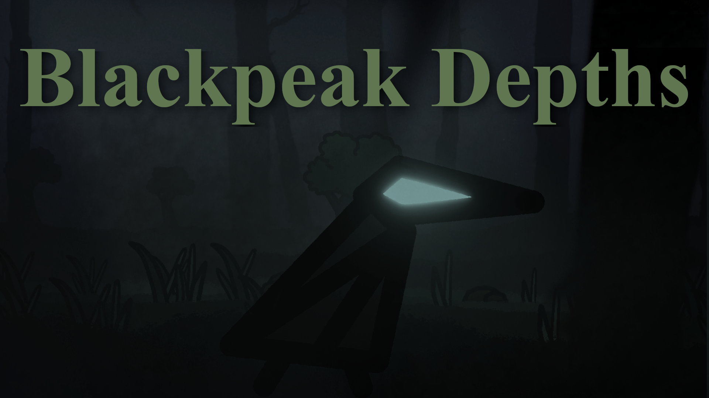
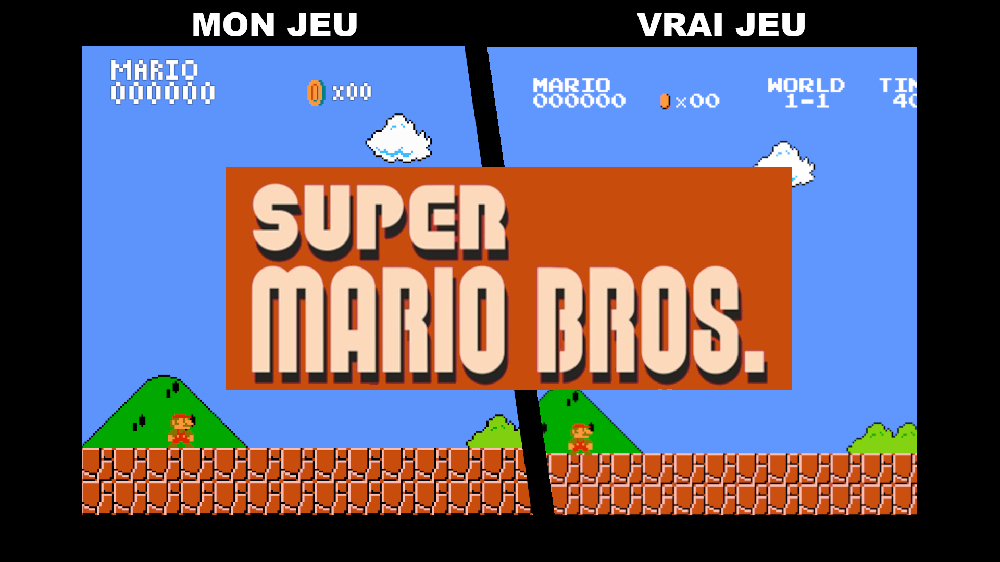
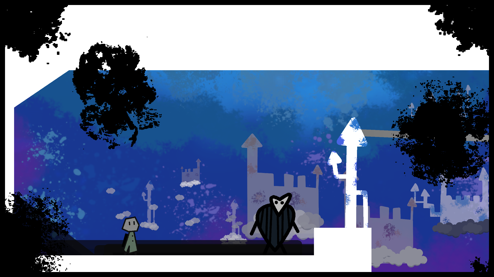

-
Hi I'm remaf
video game development student
I have been programming for over 6 years, starting as a self-taught developer using C# and Unity. Over the years, I’ve built and iterated on numerous 2D and 3D prototypes, developing a strong proficiency in system architecture and problem-solving. I actively document my development process on YouTube and showcase playable projects on itch.io. While comfortable with 3D, I specialize in 2D gameplay development and am actively seeking opportunities as a Gameplay Programmer.
I'm currently working on Blackpeak Depths.
-
Blackpeak Depths:
A 2D metroidvania where you play as a raven trying to find the origin of a mysterious pandemic that turned animals into monsters. This game reuses a lot of common mechanics of metroidvanias.
Here's the github repository.

-
Unity 2D Performance Optimization:
A technical demonstration showcasing how to optimize a dense 2D scene in Unity (handling thousands of active items) by replacing heavy per-frame updates and global physics calculations with a distance-based activation system and optimized interaction logic.
Here's the github repository.
-
Media Player:
A custom media player built from scratch in C++ using Qt. It allows users to import MP3 files, manage track metadata (artist, song name, album, and cover art), and organize them into custom playlists. Automatically organizes imported files into a playable queue. Play, pause, skip to the next/previous track, and toggle shuffle mode.
Here's the github repository.
-
Hardcore Mario Bros:
A remake of the first level of Super Mario Bros., reimagined with a much higher difficulty. In addition to a tougher version of World 1-1, I designed four brand-new, deliberately difficult levels designed to test players' patience. I also custom-redesigned the textures to give the game a darker, more menacing atmosphere.
Here's the github repository.

-
Cokry:
A little 2D platformer inspired by Rayman Legends and classic 2D Mario games. Each level introduces a new mechanic that becomes essential for the final stage (the music level). There are four levels in total, each containing a hidden collectible coin. Collecting all four coins unlocks the secret final level.
Here's the github repository.
